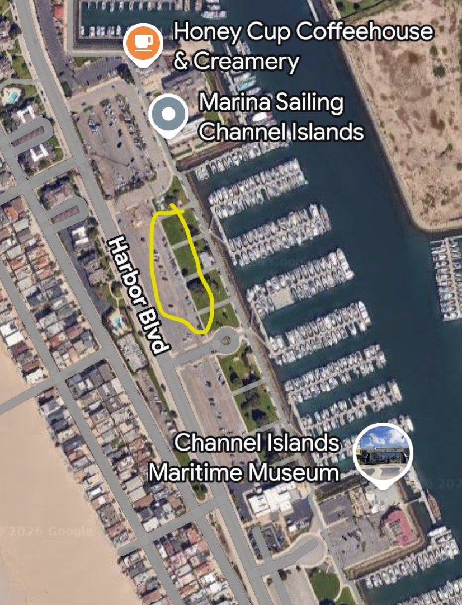
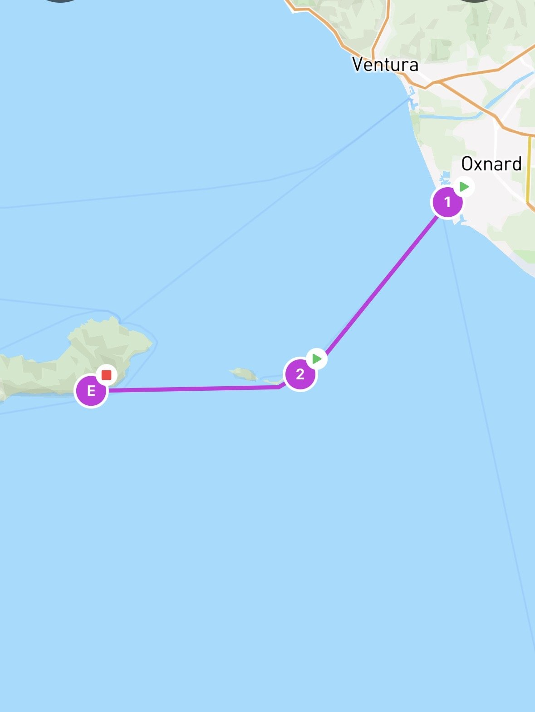
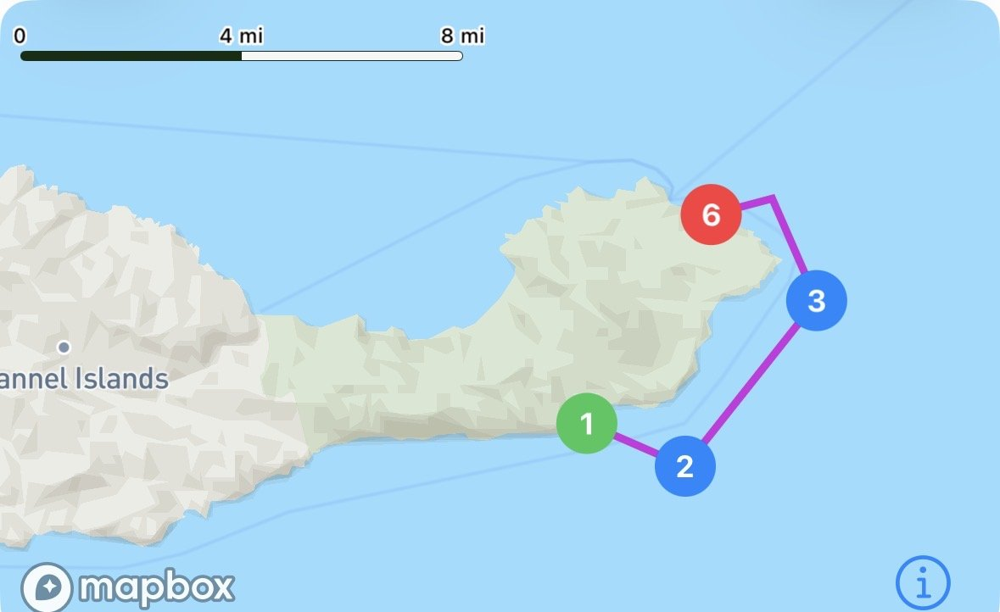
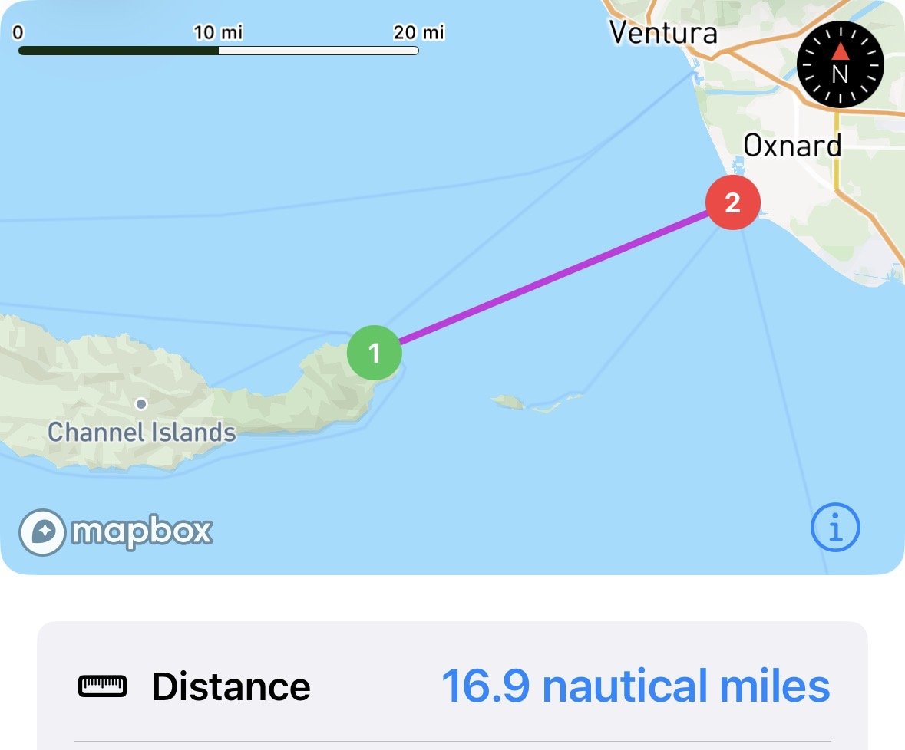
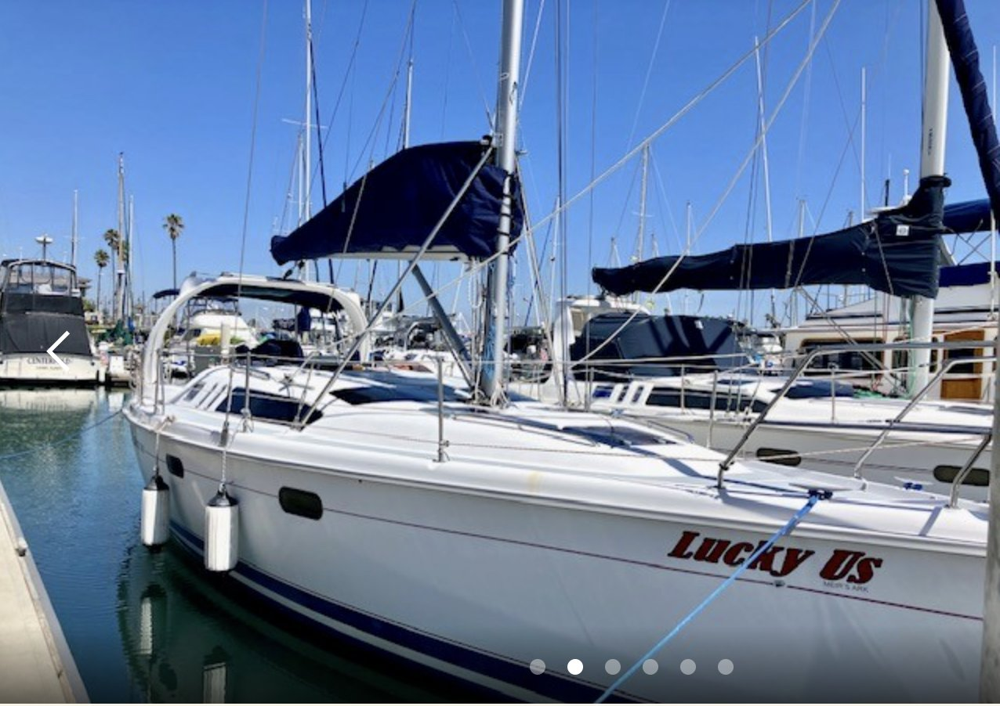
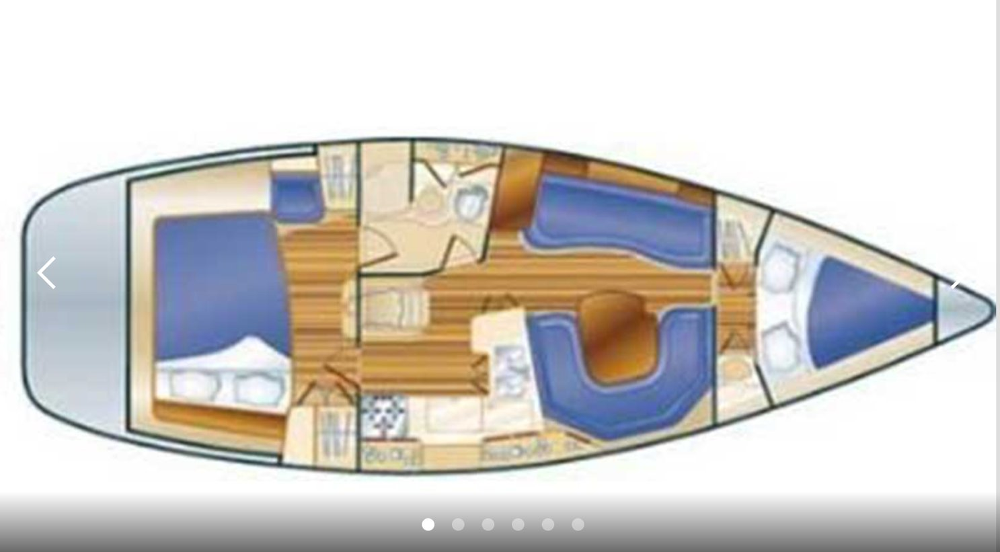
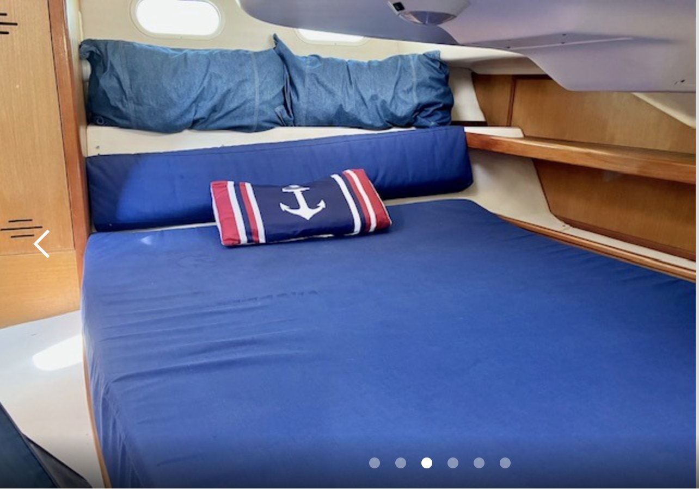
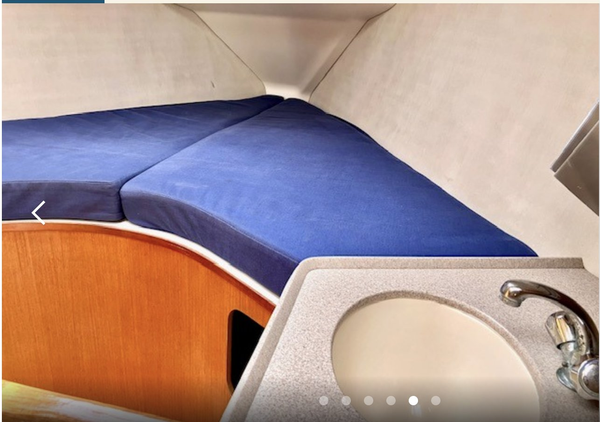

Getting out to the islands for Lobster opening weekend. Lots of spearfishing, scuba diving and lobster hunting to come.
Channel Islands are a beautiful national park off the California coast. October is the opening season for lobster hunting. We usually have good weather, but it does tend to cool down, so be sure to bring layers. We will be spending the weekend out in nature with no cell service and cooking all of our own food. It's an uninhabited wilderness, so be sure to bring everything that you need with you. The water temperatures should be in the low 60's. If you're planning on doing some lobster hunting/spearfishing/snorkeling, you'll want to bring your 7mm wetsuit gear (suit, hood, gloves, boots).
10/2 Friday Day 1 - Oxnard to Smuggler's Cove. 22.6 nautical miles. 3.5 hr boat ride.
We are chartering our boat from Marina Sailing out of Oxnard. Please park in the parking lot and make sure to get a parking permit from me. Let's meet up at 10 a.m. to get the boat loaded.

Depending on how quickly we load our things and weather conditions, we could make a stop in Anacapa for some diving/fishing/lunch. Afterwards we will continue on to Smuggler's Cove where we will anchor overnight.

10/3 Saturday Day 2 - Smuggler's Cove to Scorpion Rock. 7.7 nautical miles. 1.5 hr boat ride.
We have a very quick boat ride today. If Smuggler's Cove is nice, we can spend some time here. We can also explore around other parts of the island. We've had good luck finding lobsters around the Scorpion Rock anchorage, so that's an option to head to for our next overnight anchoring.

10/4 Sunday Day 3 - Scorpion Rock to Oxnard. 16.9 nautical miles. 2.5 hr boat ride.
For our final day, we can choose what we want to do. We can continue hanging out at Scorpion Rock, or we can sail over to some other spots around the island to explore. We will aim to be back at Oxnard around 6pm, so we have until around 3:30pm at Scorpion Rock before we need to head back. Once back at Oxnard, we will unload the boat and clean up, it usually takes an hour or so.

We have a 38 foot Hunter Sailboat. There are 2 cabins, and 2 couches for sleeping. 1 communal bathroom. Deck space is at a premium, but I will bring my 6 pack scuba tank holder so we will be able to store our tanks.




For Scuba Divers
Bring 2 tanks max each. I have a 6 pack holder we'll strap to the boat, can figure out where to store the extra 2 tanks (we have 4 divers).
We need to cook all of our own meals. Please take a look at our meal planning spreadsheet. Put in any restrictions you may have.
Food and drinks will be split between the group.
The trip will be a blast and we aren't expecting to have any major issues arise. Those of you who have already joined us on one of our sailing adventures know what to expect. Those of you who are new, please take the time to go over the links below: